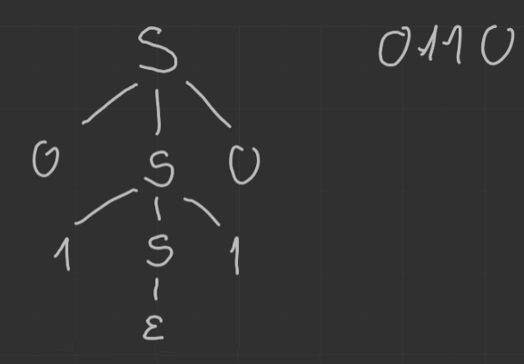

(2020-10-29)
Gramatyka bezkontekstowe \(G\) to czwórka \(G = (N, T, P, S)\) gdzie - \(N\) — skończony zbiór zmiennych (nieterminale) - \(T\) — skończony zbiór symboli końcowych (terminale, alfabet) - \(P\) — skończony zbiór produkcji postaci \(A \to \alpha\) , gdzie \(A \in N\) oraz \(\alpha \in (N \cup T)^*\) - \(S \in N\) — symbol początkowy
Jeśli \(A \to \beta\) jest produkcją w \(G\) oraz \(\alpha, \gamma \in (N \cup T)^*\) wówczas \(\alpha A \gamma \underset{G}{\Rightarrow} \alpha\beta\gamma\).
(\(\alpha\beta\gamma\) jest bezpośrednio wyprowadzany z \(\alpha A \gamma\) w gramatyce \(G\)).
Notacja: - Będziemy pisać tylko \(\Rightarrow\) gdy gramatyka jest oczywista. - \(\Rightarrow^*\) — zwrotne i przechodnie domknięcie \(\Rightarrow\).
\[ L(G) = \left\{ w: w \in T^* \land S \underset{G}{\Rightarrow}^* w \right\}. \]
Język \(L\) nazywamy bezkontekstowym jeśli jest identyczny z \(L(G)\) dla pewnej gramatyki bezkontekstowej \(G\).
\(G_1\) i \(G_2\) są równoważne, jeżeli \(L(G_1) = L(G_2)\).
\[ G = \big(~ \{S\}, \{0,1\}, \left\{ S \to \varepsilon, S \to 1, S \to 0S0, S \to 1S1 \right\}, S ~\big) \] lub inaczej (krócej) zapisując \[ S \to \epsilon|0|1|0S0|1S1. \]
Wyprowadzenie słowa \(0110\): \[ S \Rightarrow 0S0 \Rightarrow 01S10 \Rightarrow 0110. \]
Drzewo o następujących własnościach 1. każdy wierzchołek ma etykietę z \(N \cup T \cup \{\varepsilon\}\) 2. korzeń ma etykietę \(S\) (symbol początkowy) 3. wierzchołki wewnętrzne mają etykiety z \(N\) 4. jeżeli wierzchołek wewnętrzny ma etykietę \(A\) a jego potomkowie od lewej mają kolejno etykiety \(X_1, \dots, X_n\) to \(A \to X_1 \dots X_n\) jest produkcją w \(P\)
Jeśli konkatenacja wszystkich liści czytanych od lewej do prawej daje \(\alpha\) to drzewo nazywamy drzewem wyprowadzenia \(\alpha\).
kontynuacja przykładu wcześniejszego

Mamy: - gramatykę \(E \to (E + E) | (E * E) | id\) - chcemy uzyskać \(id + id * id\)
Jak widać, możemy uzyskać dwa drzewa dla tego słowa w tej gramatyce.
Oznacza to, że gramatyka jest niejednoznaczna.
Niech \(G = (N,T,P,S)\) będzie gramatyką bezkontekstową. Wówczas \(S \Rightarrow^* \alpha \iff\) istnieje drzewo wyprowadzenia \(\alpha\) w gramatyce \(G\).
«Indukcja względem liczby wierzchołków wewnętrznych w drzewie.»
Jeżeli w każdym kroku wyprowadzenia stosujemy produkcję do nieterminala leżącego najbardziej na lewo (prawo), to wyprowadzenie nazywamy lewostronnym (prawostronnym). Jeżeli \(w \in L(G)\) to w ma co najmniej jedno drzewo wyprowadzenia. Każdemu drzewu wyprowadzenia odpowiada dokładnie jedno wyprowadzenie lewostronne (prawostronne).
kontynuacja przykładu wcześniejszego
Jeśli \(L(G)\) istnieje słowo mające dwa różne drzewa wyprowadzenia to \(G\) nazywamy wieloznaczną (niejednoznaczną).
Symbol \(X\) jest użyteczny, jeśli istnieje wyprowadzenie postaci \(S \Rightarrow^* \alpha X \gamma w\) gdzie \(w \in T^*\)
otherwise \(X\) jest bezużyteczny.
Niech \(L\) — niepusty język bezkontekstowy, wówczas \(L\) można wygenerować za pomocą gramatyki \(G\) o następujących własnościach: 1. każdy symbol pojawia się w wyprowadzeniu jakiegoś słowa z \(L\) 2. nie ma produkcji postaci \(A \to B\) (produkcje jednostkowe), gdzie \(A, B \in N\)
Co więcej, jeśli \(\varepsilon \notin L\) to w \(G\) nie ma produkcji postaci \(A \to \varepsilon\).
Dla dowolnej gramatyki bezkontekstowej \(G = (N,T,P,S)\) z \(L(G) \neq \emptyset\) można efektywnie znaleźć równoważną gramatykę bezkontekstową \(G' = (N', T, P', S)\) taką, że dla dowolnego \(A \in N'\) istnieje \(w \in T^*\) takie, że \(A \Rightarrow^* w\).
while \(N_S \neq N_n\):
Dla dowolnej gramatyki bezkontekstowej \(G = (N,T,P,S)\) można efektywnie znaleźć równoważną gramatykę bezkontekstową \(G' = (N', T', P', S)\) taką, że dla każdego \(X \in (N' \cup T')\) istnieją \(\alpha, \beta \in (N' \cup T')^*\) takie, że \(S \Rightarrow^* \alpha X \beta\).
while można zmienić \(N'\):
Każdy niepusty język bezkontekstowy jest generowany przez gramatykę bezkontekstową niezawierającą symboli bezużytecznych.
Jeżeli \(L = L(G)\) dla gramatyki bezkontekstowej \(G = (N,T,P,S)\) to dla \(L \setminus \{\varepsilon\}\) istnieje gramatyka bezkontekstowa \(G'\) niezawierająca \(\varepsilon\)-produkcji i symboli bezużytecznych.
Symbole bezużyteczne usunęliśmy dzięki poprzedniemu twierdzeniu.
Dla każdego nieterminala \(A\) sprawdzamy czy \(A \Rightarrow^* \varepsilon\). Jeśli tak to każdą produkcję \(B \to \alpha A \beta\) zastępujemy produkcjami \(B \to \alpha A \beta\) oraz \(B \to \alpha \beta\) (ale nie dołączamy \(B \to \varepsilon\)).
Następnie usuwamy wszystkie \(\varepsilon\)-produkcje
Każdy język bezkontekstowy niezawierający \(\varepsilon\) jest definiowany za pomocą gramatyki niezawierającej symboli bezużytecznych, \(\varepsilon\)-produkcji oraz produkcji jednostkowych.
Jeżeli dla nieterminala \(A\) mamy \(A \Rightarrow^* B\) oraz \(A \neq B\),
to dla każdej niejednostkowej produkcji \(B \to \alpha\) dodajemy produkcję \(A \to \alpha\).
Następnie usuwamy produkcje jednostkowe.
Dowolny język bezkontekstowy niezawierający \(\varepsilon\) jest generowany przez gramatykę, której wszystkie produkcje są postaci \(A \to BC\) lub \(A \to a\), gdzie \(A,B,C \in N\) oraz \(a \in T\).
Niech \(G\) będzie gramatyką bez symboli bezużytecznych, \(\varepsilon\)-produkcji i produkcji jednostkowych. Wówczas jeśli prawa strona produkcji jest długości \(1\) to jest postaci \(A \to a\).
Dla pozostałych produkcji wykonujemy następujące operacje: 1. Jeśli po prawej stronie występuje terminal \(a\) to dodajemy do \(N\) nowy nieterminal \(C_a\) a do produkcji \(C_a \to a\) i zastępujemy \(a\) przez \(C_a\). 2. Teraz jeśli prawa strona produkcji jest dłuższa niż \(1\) to zawiera tylko nieterminale. Jeśli jest postaci \(A \to B_1\dots B_n\) dla \(n > 2\), to tworzymy nowe nieterminale \(D_1,\dots,D_{n-2}\) i zastępujemy tę produkcję przez \(A \to B_1 D_1, D_1 \to B_2 D_2, \dots, D_{n-3} \to B_{n-2}D_{n-2}, D_{n-2} \to B_{n-1}B_n\).
Mamy: - \(S \to bA|aB\) - \(A \to bAA|aS|a\) - \(B \to aBB|bS|b\)
Wówczas, postać normalna Chomsky’ego: - \(S \to C_b A | C_a B\) - \(A \to C_b D_A | C_a S | a\) - \(B \to C_a D_B | C_b S | b\) - \(C_a \to a\) - \(C_b \to b\) - \(D_A \to AA\) - \(D_B \to BB\)
Produkcje są postaci \(A \to a\alpha\), gdzie \(A \in N,\enspace a \in T,\enspace, \alpha \in N^*\).
Określmy jako \(A\)-produkcje wszystkie produkcje z nieterminalem \(A\) po lewej stronie.
Niech \(G = (N,T,P,S)\) będzie gramatyką bezkontekstową.
Niech \(A \to \alpha_1 B \alpha_2\) będzie produkcją w \(P\) i niech \(B \to \beta_1|\dots|\beta_r\) będzie zbiorem wszystkich \(B\)-produkcji.
Niech \(G' = (N,T,P',S)\) będzie gramatyką otrzymaną z \(G\) przez usunięcie produkcji \(A \to \alpha_1 B \alpha_2\) i dodanie produkcji \(A \to \alpha_1 \beta_1 \alpha_2 | \dots | \alpha_1 \beta_r \alpha_2\). Wówczas \(L(G) = L(G')\).
Dowód po strukturze drzewa wyprowadzenia.
Niech \(G = (N,T,P,S)\) będzie gramatyką bezkontekstową.
Niech \(A \to A \alpha_1 | \dots | A \alpha_r\) będzie zbiorem tych \(A\)-produkcji, których prawe strony zaczynają się od \(A\). Niech \(A \to \beta_1 | \dots | \beta_S\) będzie zbiorem pozostałych \(A\)-produkcji. Niech \(G' = (N \cup \{B\}, T, P', S)\) będzie gramatyką utworzoną poprzez dodanie nowego nieterminala \(B\) i zastąpienie wszystkich \(A\)-produkcji przez następujące produkcje \[ \begin{aligned} A \to \beta_i|\beta_i B &\quad& 1 \le i \le s\\ B \to \alpha_j | \alpha_j B &\quad& 1 \le j \le r\\ \end{aligned} \] Wówczas \(L(G) = L(G')\).
W wyprowadzeniu lewostronnym ciąg produkcji postaci \(A \to A \alpha_i\) musi kiedyś skończyć się produkcją \(A \to \beta_j\): \[ A \Rightarrow A \alpha_{i_1} \Rightarrow A \alpha_{i_2} \alpha_{i_1} \Rightarrow \dots \Rightarrow A \alpha_{i_n} \dots \alpha_{i_1} \Rightarrow \beta_j \alpha_{i_n} \dots \alpha_{i_1} \] Można to zastąpić przez \[ A \Rightarrow \beta_j B \Rightarrow \beta_j \alpha_{i_n} B \Rightarrow \dots \Rightarrow \beta_j\alpha_{i_n} \dots \alpha_{i_2}B \Rightarrow \Beta_j \alpha_{i_n} \dots \alpha_{i_1} \]
Ponieważ transformacja ta jest obustronna to \(L(G) = L(G')\).
Każdy język bezkontekstowy \(L\) niezawierający \(\varepsilon\) jest generowany przez pewną gramatykę, w której każda produkcja jest postaci \(A \to a \alpha\), gdzie \(a \in T,\enspace A \in N,\enspace \alpha \in N^*\).
Niech \(G = (N,T,P,S)\) będzie gramatyką w postaci normalnej Chomsky’ego.
Załóżmy, że \(N = \{A_1, \dots, A_n\}\).
Modyfikujemy produkcje tak, aby jeśli produkcja jest postaci \(A_i \to A_j \alpha\) to \(i < j\).
for \(k \gets 1\) to \(n\):
Po wykonaniu tego algorytmu mamy gramatykę równoważną o produkcjach w postaci: 1. \(A_i \to A_j \gamma\), gdzie zawsze \(i < j\) 2. \(A_i \to a \gamma\), gdzie \(a \in T\) 3. \(B_i \to \gamma\), dzie \(\gamma \in (N \cup \{B_1, \dots, B_{i-1}\})^*\).
Zauważmy, że \(A_n\)-produkcje muszą zaczynać się terminalem.
Teraz rozważmy \(A_{n-1}\)–produkcje: ich lewe strony muszą zaczynać się terminalem lub nieterminalem \(A_n\) więc możemy je z Lematu#1 zastąpić prawymi stronami \(A_n\)-produkcji (wszystkie zaczynają się terminalem). I tak do \(A_1\).
Łatwo zauważyć, że \(B\)-produkcje nigdy nie zaczynają się nieterminalem \(B\), więc też z Lemat#1 możemy je zastąpić prawymi stronami \(A\)-produkcji.
Mamy: - \(A_1 \to A_2 A_3\) - \(A_2 \to A_3 A_1 | b\) - \(A_3 \to A_1 A_2 | a\)
Nie pasuje \(A_3 \to A_1 A_2\) więc z Lemat#1 dostajemy \(A_3 \to A_2 A_3 A_2\).
Dalej nie pasuje, więc ponownie z Lemat#1 otrzymujemy \(A_3 \to A_3 A_1 A_3 A_2 | b A_3 A_2\).
Teraz mamy \(A_3 \to A_3 A_1 A_3 A_2 | b A_3 A_2 | a\), korzystamy z Lemat#2 i otrzymujemy
\(A_3 \to a| aB_3 | b A_3 A_2 | b A_3 A_2 B_3\) oraz \(B_3 \to A_1 A_3 A_2 | A_1 A_3 A_2 B_3\).
Teraz odpowiednio podstawiając zgodnie z Lemat#1 otrzymujemy: - \(A_3 \to a | aB_3 | b A_3 A_2 | b A_3 A_2 B_3\) - \(A_2 \to a A_1 | a B_3 A_1 | b A_3 A_2 A_1 | b A_3 A_2 B_3 A_1 | b\) - \(A_1 \to a A_1 A_3 | a B_3 A_1 A_3 | b A_3 A_2 A_1 A_3 | b A_3 A_2 B_3 A_1 A_3 | b A_3\) - \(B_3 \to a A_1 A_3 A_3 A_2 \\| a B_3 A_1 A_3 A_3 A_2 \\| b A_3 A_2 A_1 A_3 A_3 A_2 \\| b A_3 A_2 B_3 A_1 A_3 A_3 A_2 \\| bA_3 A_3 A_2 \\|a A_1 A_3 A_3 A_2 B_3 \\| a B_3 A_1 A_3 A_3 A_2 B_3 \\| b A_3 A_2 A_1 A_3 A_3 A_2 B_3 \\| b A_3 A_2 B_3 A_1 A_3 A_3 A_2 B_3 \\| b A_3 A_3 A_2 B_3\)